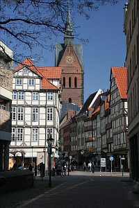
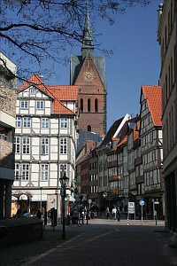

Hannover
-
Anzeiger Hochhaus
The Anzeiger Hochhaus was probably the first high rise building in Hanover. It was built in 1927/28 by the Hannover Anzeiger and soon became a symbol for the city's press. Magazines like 'Spiegel' and 'Stern' were founded in the building. Its expressionist style is particularly interesting. Behind a facade of clinker is hidden a scaffolding of steel. The cupola in the top of the building accommodates a cinema, the Hochhaus Kino. Today several broadcasting companies and television stations have set up in the Anzeiger Hochhaus, now also known as media centre Hanover (Medienzentrum Hannover). -
Staatsoper
The Hanover Opera House is a theater built in classical style between 1845 and 1852 based on a plan drawn by Laves. The building was badly damaged in World War II and rebuilt in 1948. In 1985, the acoustics were improved, and between 1996 and 1998 the stage facilities were renovated. The opera is the home base of Staatsoper Hannover, one of the leading opera companies in Germany. During the course of its season from September to June, Staatsoper Hannover mounts productions of a variety of operas from the standard operatic repertoire as well as 20th century works. -
Neues Rathaus
The landmark of Hanover is the New Town Hall (Neues Rathaus). Insite are four models of the town and the only working diagonal-elevator in Germany, which goes up the large dome. The structure itself, completed ca. 1913, is still in its infancy by European standards. However, it blends in perfectly among the area's centuries-old churches, castles and palaces.Hannover was almost entirely annihilated during WW II. Inside City Hall, you'll find several wonderfully detailed/accurate models representing the city before, during and after the bombings.
The building is attractive because of its location in the Maschpark, by a small lake. It's just a short distance from the extensive artificial Maschsee, frequented by Hannoverians for its beach, boats, and restaurants. -
Hannover Congress Centrum
The HCC is situated not only amidst greenness, but also in the centre of the city. The picturesque park, adjacent to the city forest Eilenriede, borders directly on the city. -
Marktkirche
The Market Church in the center of Hannover was completed around 1350 and is a remarkable example of a Gothic church built from hand-made bricks. It is unique in its pure and austere Gothic appearance, which was established during the church's reconstruction after World War II that omitted all elements in other styles that had been added over the centuries and uncovered the brickwork in its natural colour. The organ of the Marktkirche was built into the reconstructed church in 1953/54 and comprises 61 stops on four manuals and the pedals. The organ front is a unique and landmarked example of organ building in the fifties of the last century. -
Telemax
The Telemax is a telecommunication tower built from 1988 to 1992. The tower was designed by Hans U. Boeckler and is 272 meters high. The tower stands on a 10 meter high base building, which brings its overall height to 282 meters. There is no observation deck on the Telemax. The building is of architechtural interest due to its square surfaces.
The city of Hannover is situated in the northern part of Germany, almost in the heart of Europe. The city is well known as one of the world's leading locations for exhibitions and fairs. Hannover has an ideal location, offering outstanding cultural and recreational attractions. The refurbished city centre - a paradise for strollers - with its long malls and arcades, cafes, bubbling fountains and sculpturs like the "Nanas" de Niki de Saint-Phalle. The city has painted a "Roter Faden" (red line) on pavements around the centre. Follow it with the help of the multilingual Red Thread Guide, available from the tourist office, and you can discover on a do-it-yourself tour (4,2 km) the city's main highlights.
The great garden of Herrenhausen is a unique jewel of baroque garden architecture with his statues, fountains and coloured tile walls of the Niki de Saint-Phalle Grotto providing a magical showcase of the artist's great work. During the summer months, a great variety of events take place in this garden like music festivals, baroque fireworks and theatre performances. Because of this great garden and other magnificent gardens in this area like Berggarten and Georgengarten, Hannover calls itself a city "in green".
But there is another highlight: the Maschsee, an artificial lake in the heart of the city with its nautical flair where you can rent sailing and rowing boats. This is another great attraction which the city of Hannover has to offer to its visitors.
And never to forget the marvellous countryside surrounding the city. A perfect place to stay - that is Hannover.
You can find more about Hannover here.
 
